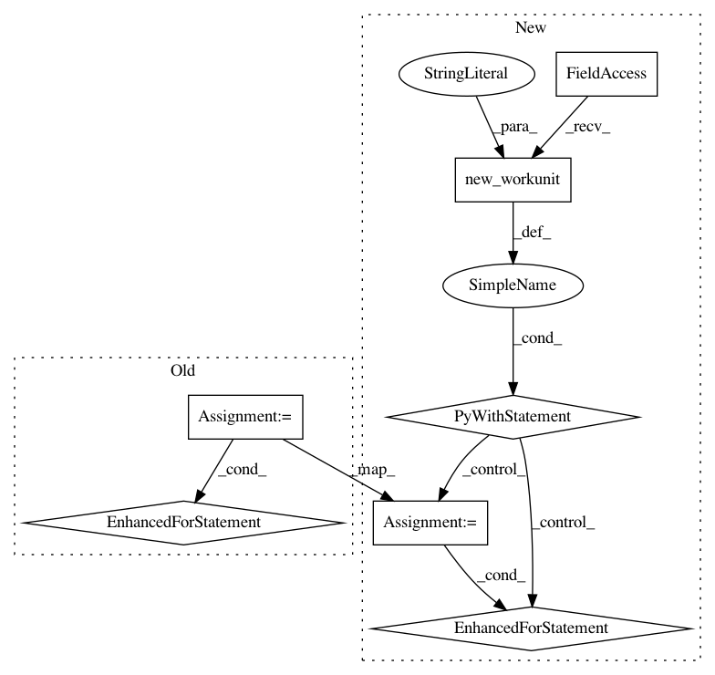

7b48282ead7ca86abcf821accc312fadedc1431a,src/python/twitter/pants/tasks/jvm_compile/jvm_dependency_analyzer.py,JvmDependencyAnalyzer,_compute_targets_by_file,#JvmDependencyAnalyzer#,30
Before Change
jarlibs_by_id[(jardep.org, jardep.name)].add(target)
// Compute class -> target.
classes_by_target = self._context.products.get_data("classes_by_target")
for tgt, target_products in classes_by_target.items():
for _, classes in target_products.abs_paths():
for cls in classes:
targets_by_file[cls].add(tgt)
// Compute jar -> target.
with Task.symlink_map_lock:
all_symlinks_map = self._context.products.get_data("symlink_map").copy()
// We make a copy, so it"s safe to use outside the lock.
After Change
jarlibs_by_id[(jardep.org, jardep.name)].add(target)
// Compute class -> target.
with self._context.new_workunit(name="map_classes"):
classes_by_target = self._context.products.get_data("classes_by_target")
for tgt, target_products in classes_by_target.items():
for _, classes in target_products.abs_paths():
for cls in classes:
targets_by_file[cls].add(tgt)
// Compute jar -> target.
with self._context.new_workunit(name="map_jars"):
with Task.symlink_map_lock:
all_symlinks_map = self._context.products.get_data("symlink_map").copy()
// We make a copy, so it"s safe to use outside the lock.
In pattern: SUPERPATTERN
Frequency: 3
Non-data size: 7
Instances
Project Name: pantsbuild/pants
Commit Name: 7b48282ead7ca86abcf821accc312fadedc1431a
Time: 2014-03-18
Author: benjy@foursquare.com
File Name: src/python/twitter/pants/tasks/jvm_compile/jvm_dependency_analyzer.py
Class Name: JvmDependencyAnalyzer
Method Name: _compute_targets_by_file
Project Name: pantsbuild/pants
Commit Name: 0093628056bbf454faf35709ee3c61acc133d0e9
Time: 2016-11-05
Author: wisechengyi@gmail.com
File Name: contrib/scrooge/src/python/pants/contrib/scrooge/tasks/thrift_linter.py
Class Name: ThriftLinter
Method Name: execute
Project Name: pantsbuild/pants
Commit Name: a4cb83436274d636bae946932f478e183b61bc28
Time: 2013-05-17
Author: benjyw@gmail.com
File Name: src/python/twitter/pants/tasks/java_compile.py
Class Name: JavaCompile
Method Name: check_artifact_cache